Key Takeaways
- Controls IE keyboard shortcuts in Edge IE mode.
- Enables shortcuts like Ctrl+S when turned on.
- Makes IE mode work more like Internet Explorer.
- Shortcuts won’t work if the policy is off or not set.
Hey, let’s discuss about Enable Extended Internet Explorer Mode Hotkeys in Microsoft Edge using Intune. This policy allows administrators to turn on additional keyboard shortcuts in Microsoft Edge when using Internet Explorer (IE) mode. For example, shortcuts like Ctrl+S will work the same way they did in Internet Explorer and open the Save As option.
Table of Contents
Enable Extended Internet Explorer Mode Hotkeys in Microsoft Edge using Intune
If this policy is enabled, users can use these extended IE hotkeys while browsing in IE mode. If the policy is disabled or not configured, these extra keyboard shortcuts will not be available in IE mode.
How to Create a Policy
To start deploying a policy in Intune, sign in to the Microsoft Intune Admin Center. Then go to Devices> Configuration under the Manage devices> Policies> Create> New policy.
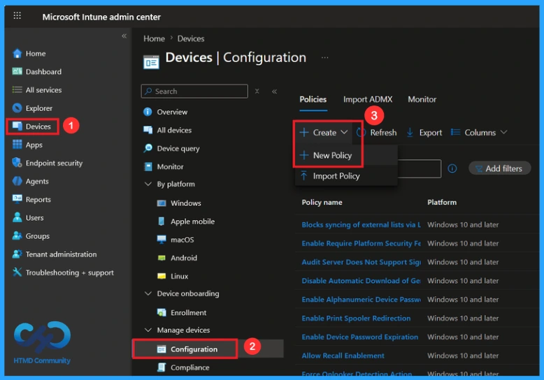
Create a Profile
In the create a profile window, add the platform Windows 10 and later, profile type is Settings Catalog. Then click the create button.

Basic Steps for Name and Description
To configure a policy in Intune, start with the Basics step, where you enter the policy name (e.g Enable extended hot keys in Internet Explorer mode ), and provide a short description (such as To enable extended hot keys in Internet Explorer mode). Click Next to continue.
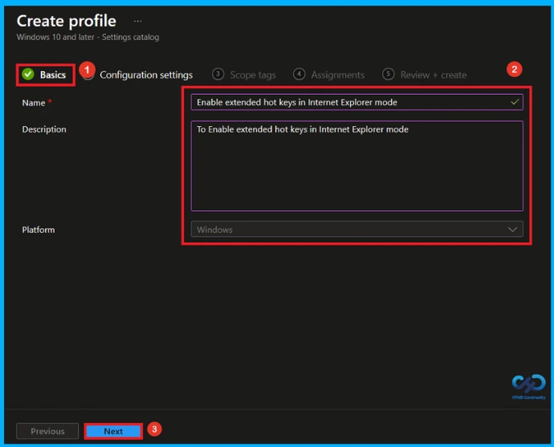
Configuration Settings
In the Configuration settings, you can see the Add settings button. Click the Add Settings to browse or search the catalog for the settings you want to configure. In the Settings picker, you can search for the Settings quickly. You can browse the settings by category or use the search bar. Here, I choose the Administrative Templates\Windows Components\Internet Explorer category, select Enable extended hot keys in Internet Explorer mode to configure it, and then close the Settings Picker window.
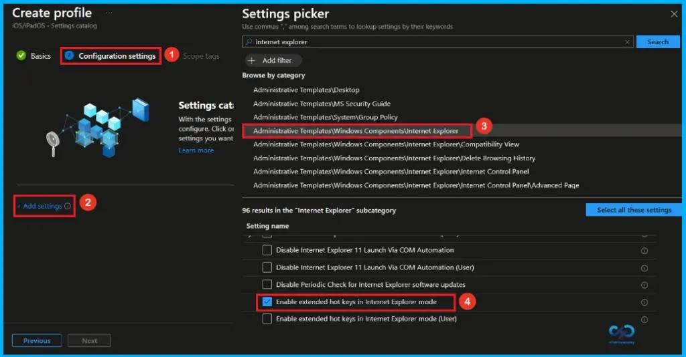
Disable Extended Hot Keys in Internet Explorer Mode
Once you have selected this policy and closed the Settings picker. You will see it on the Configuration page. Here we have only two settings: Enable or Disable. By default, it will be set to Disabled. If you want to disable these settings, click on the Next button.
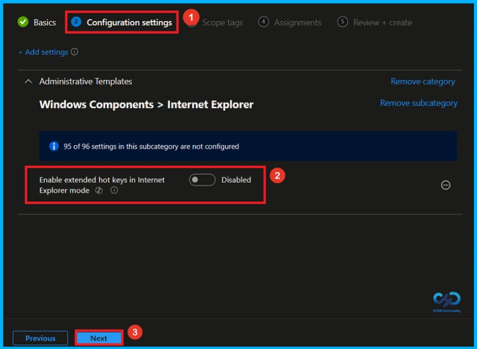
Enable Extended Hot Keys in Internet Explorer Mode
If we enable or configure this policy, you can enable the extended hot keys in internet explorer mode policy by toggling the switch from left to right. Then, you can click the Next button to proceed.
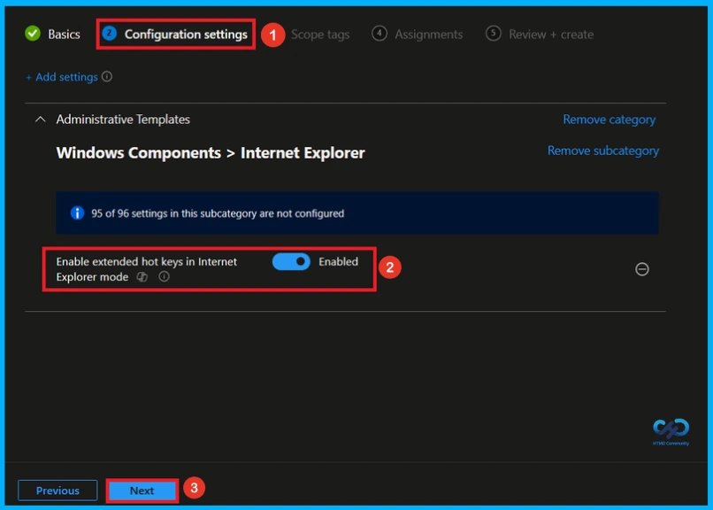
What is Scope Tag
In Intune, Scope Tags are used to control who can view and modify a policy. The scope tag is not mandatory, so you can skip this section. It functions as a tool for organisation and access management, but assigning it is optional. Click Next if they’re not required for your setup.

Assignment Tab for Assign Group
In the Assignments tab, you choose the users or devices that will receive the policy by clicking Add Group under Include Group, select the group that you want to target (HTMD – Test Policy) and then click Next to continue.

Final Step of Policy Creation
At the final Review + Create step, we see a summary of all configured settings for the new profile; after reviewing the details and making any necessary changes by clicking Previous. We click Create to finish, and a notification confirms that the “Enable extended hot keys in Internet Explorer mode created successfully”.
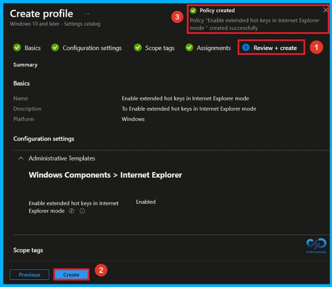
Device and User Check-in Status
To view a policy’s status, go to Devices > Configuration in the Intune portal, select the policy (Enable extended hot keys in Internet Explorer mode), and check that the status shows Succeeded (1). Use manual sync in the Company Portal to speed up the process.
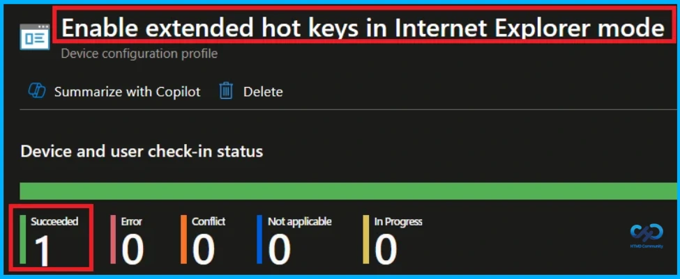
Client Side Verification
To confirm if a policy has been applied, use the Event Viewer on the client device. Go to Applications and Services Logs > Microsoft > Windows > Device Management > Enterprise Diagnostic Provider > Admin. From the list of policies, use the Filter Current Log option and search for Intune event 814.
MDM PolicyManager: Set policy strinq, Policy: (EnableExtendedIEModeHotkeys Area:
(InternetExplorer), EnrollmentID requestinq merge: (EB42/D85-8U2F-40D9-A3E2-D5B414587F63),
Current User: (Device), String: (), Enrollment Type: (0x6), Scope: (0x0).
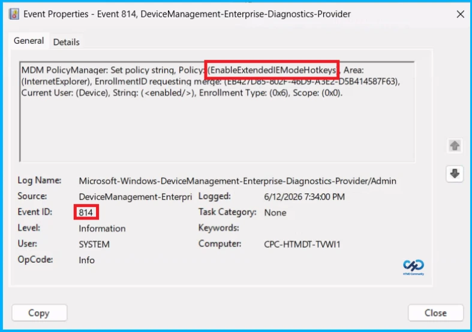
Windows Configuration Service Provider (CSP)
The Policy Configuration Service Provider (CSP) is a feature used by organisations to manage and control settings on Windows 10 and 11 devices.
Description framework properties:
- Format –
chr(string) - Access Type – Add, Delete, Get, Replace
ADMX mapping:
| Name | Value |
|---|---|
| Name | EnableExtendedIEModeHotkeys |
| Friendly Name | Enable extended hot keys in Internet Explorer mode |
| Location | Computer and User Configuration |
| Path | Windows Components > Internet Explorer |
| Registry Key Name | Software\Policies\Microsoft\Internet Explorer\Main\EnterpriseMode |
| Registry Value Name | EnableExtendedIEModeHotkeys |
| ADMX File Name | inetres.admx |
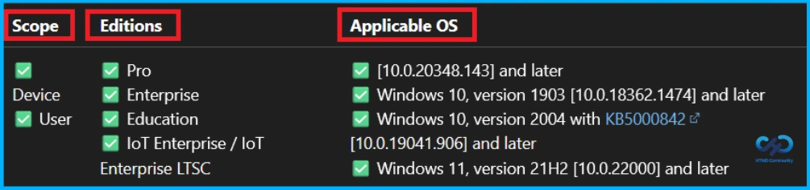
How to Remove Assigned Group from this Policy
If you need to remove a group from a policy assignment for security updates. Open the policy from the configuration tab and click on the edit button. Then, click on the Remove button. Click Review + Save after making the changes.
For detailed information, you can refer to our previous post – Learn How to Delete or Remove App Assignment from Intune using by Step-by-Step Guide.
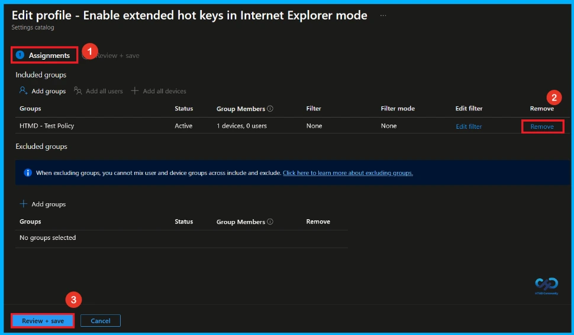
How to Delete this Policy from Intune
If you want to delete this policy for any reason, you can do it easily. First, search for the policy name in the configuration section. When you find the policy name, click the 3-dot menu next to it and tap the Delete option.
For more information, you can refer to our previous post – How to Delete Allow Clipboard History Policy in Intune Step by Step Guide.
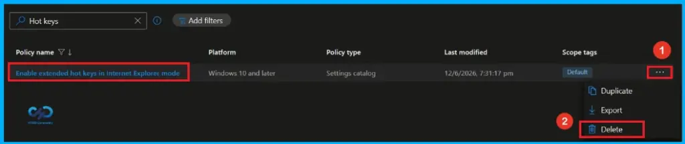
Need Further Assistance or Have Technical Questions?
Join the LinkedIn Page and Telegram group to get the latest step-by-step guides and news updates. Join our Meetup Page to participate in User group meetings. Also, Join the WhatsApp Community and WhatsApp Channel to get the latest news on Microsoft Technologies. We are there on Reddit as well.
Author
Anoop C Nair has been Microsoft MVP from 2015 onwards for 10 consecutive years! He is a Workplace Solution Architect with more than 22+ years of experience in Workplace technologies. He is also a Blogger, Speaker, and Local User Group Community leader. His primary focus is on Device Management technologies like SCCM and Intune. He writes about technologies like Intune, SCCM, Windows, Cloud PC, Windows, Entra, Microsoft Security, Career, etc.